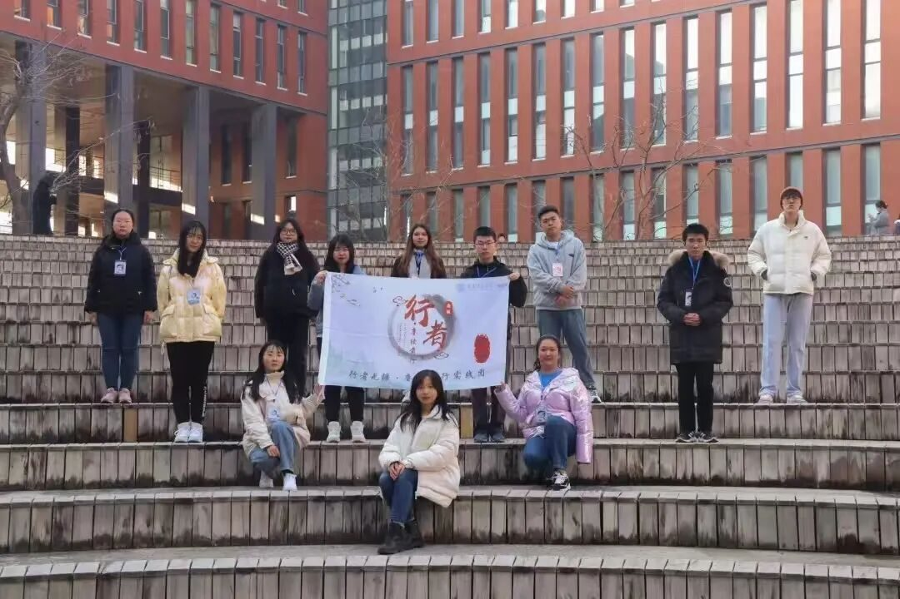
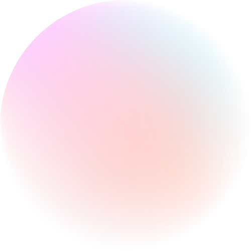

行八载，疆无垠！


立在岁月的长堤上极目遥望
似见时光的风烟袅袅飘荡
小行已悠然迈过八载悠长流光
静静回顾往昔与诸君携手共度的韶华
小行心间仿若有暖流潺潺
满溢无尽的念想与情长
PART 01
PART 02
PART 03

HAPPY

BIRTHDAY

八载星辰岁月长，非遗探寻韵悠扬
行者有志穿风雨，艺海扬帆荡远舟
古迹山川皆入卷，民俗技艺韵中藏
且看此路繁花盛，再谱华章续锦章
来源 | 行者无疆实践团
图片 | 行者无疆实践团
文字 | 李凌志
编辑 | 杩健辉
审核 | 李凌志 杩健辉 范伊诺
责编 | 邹靓靓